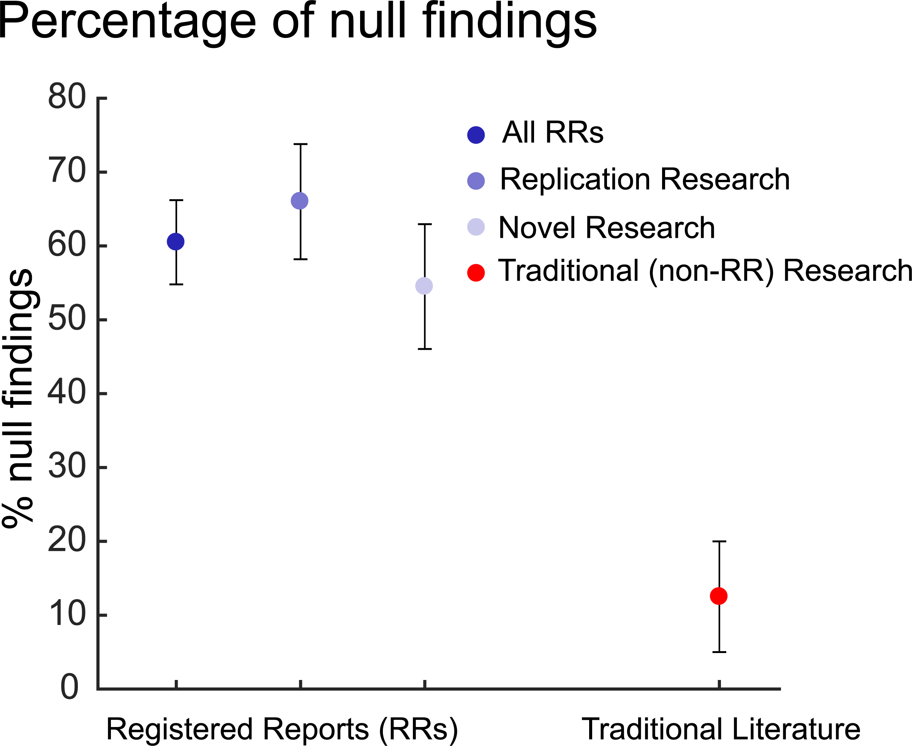

PSYC 422 Lecture 3
Power, bias and research ethics - how to be a better researcher (Part II)
Slides are open source
Link for the HTML version of these slides (always up to date)

Outline
- Cautionary Tales from Psychology research
- Questionable Research Practices
- Possible solutions
- Replicability and replication projects
- How open should we be?
- Preregistration and Registered Reports
- What you can do!
Advice of a famous social psychologist
“There are two possible articles you can write: (1) the article you planned to write when you designed your study or (2) the article that makes the most sense now that you have seen the results. They are rarely the same, and the correct answer is (2).”
-Bem, 2003, pp. 171-172
A cautionary tale I: Daryl Bem
- Daryl Bem, 2011, Journal of Personality & Social Psychology (not open access - cited 631 times)
- Respected researcher, top-tier journal
- Published 9 experiments which claimed to show effects of precognition
- Took established psychological experiments & time-reversed them
A cautionary tale I: Daryl Bem
- Encouraged others to replicate - even provided software
- Researchers from 3 institutions (Stuart Ritchie, Chris French, and Richard Wiseman) decided to do this
- Pre-registered
- Failed to replicate any of the effects
A cautionary tale I: Daryl Bem
- Submitted to original journal (JPSP)
- Rejected without review - “we do not publish replications”
- Also rejected without review by Science Brevia & Psychological Science
- Reviewed at British Journal of Psychology - rejected (Bem was a reviewer)
- Finally published in PLoS One (“Failing the Future”) (open access - cited 118 times)
Side note - citations?
…do they support, mention or contradict?
- New platform scite.ai uses machine learning to determine what KIND of citations a paper gets
- Supporting, mentioning, contradicting
- Most studies “mention” Bem rather than supporting
- Of the 5 “supporting” citations, 3 are by Bem himself and the other 2 don’t actually support it
A cautionary tale II: Diderick Stapel
- Diderick Stapel - famous Dutch social psychologist
- Received the “Career Trajectory Award” from the Society of Experimental Social Psychology in 2009
- 130 articles, 24 book chapters
- Key findings: Messy environments promote stereotyping; meat eaters “more selfish” than vegetarians
- Students never saw raw data; results “too good to be true”?
A cautionary tale II: Diderick Stapel
- Eventually, students blew the whistle
- All the data had been fabricated
- At least 50 articles retracted
- How did he go unchallenged for so long?
- Why did he do it?
- Free translation of his book here!
Quote
“Outright fraud is somewhat impossible to estimate, because if you’re really good at it you wouldn’t be detectable,” said Simonsohn, a social psychologist. “It’s like asking how much of our money is fake money – we only catch the really bad fakers, the good fakers we never catch.”
A cautionary tale III - John Bargh
- Classic finding: “social priming” - participants walked out of lab more slowly after being primed with “elderly”-related words (Bargh, Chen & Burrows, 1996)
- Cited over 2000 times - but not replicated often
- Stephane Doyen & colleagues attempted replication
- A few changes - more Ss, double blinding, and infrared sensors
- Effect did not replicate
Barghed!
Questionable research practices (QRPs)
- Fig. 1. The nine circles of scientific hell (with apologies to Dante and xkcd). © Association for Psychological Science.
Neuroskeptic, 2012
- First Circle: Limbo
- Second Circle: Overselling
- Third Circle: Post-Hoc Storytelling
- Fourth Circle: p Value Fishing
- Fifth Circle: Creative Use of Outliers
- Sixth Circle: Plagiarism
- Seventh Circle: Non-publication of Data
- Eighth Circle: Partial Publication of Data
- Ninth Circle: Inventing Data
How common are QRPs?
Podcast about this paper here!
Prevalence of QRPs in Psychology
Bayesian truth serum??
- Half subjects told that the truthfulness of their responses would be determined by an algorithm (BTS)
- This would determine the value of a donation to the charity of their choice
- This was true!
- The use of BTS increased % who admitted to QRPs, particularly those they judged less defensible
- Overall percentage very high!!
Why are we here?
- As scientists, we want to know what is true.
- Systematic replications are a tool of scientific progress:
- How reliable is the data published in journals?
- What practices would lead to a higher level of replicability?
The Reproducibility Project (RP)
- Aim: How reproducible are results in Psychology?
- 255 volunteer researchers
- 64 universities
- 11 countries
- Attempt to replicate 97 key findings in Psychology

Estimating the reproducibility of psychological science
Basic findings

- Approximately \(2/3^{rds}\) of studies did not replicate using a p-value cutoff
- (Cancer Biology: 54%)
Basic findings
- No original study with a \(p > . 025\) replicated
- When combined in meta-analysis with original studies, \(1/3^{rd}\) no longer had sufficient evidence for existing
Effect sizes and p-values
- Almost all replications had a smaller effect size than originals
- Diagonal line = equal effect size
Explanations for replication failures
- Original studies:
- Emphasis on innovation
- Emphasis on positive results
- Low power
- Flexibility in data analysis/collection
- Focus on clean and tidy results
- Replication studies:
- False negatives
- Sampling error
- Low fidelity
Investigating variability in replicability: Many Labs project
- One possible way of making psychology studies more robust is to distribute them across multiple labs
- This was the genesis of the first Many Labs project - now known as Many Labs 1 (OSF site here)
- Also offered the opportunity to look at variations across sample and setting
- Now followed up by Many Labs 2, 3 and 4 (5, Many Babies 1–6, #EEGMany Labs, and Many Dogs (those are the ones I know of!)
Many Labs 1 - findings
- 13 classic findings; 36 independent samples; 6,344 participants.
- Preregistered protocol
- 10 effects replicated, 1 borderline, 2 didn’t
- Not much difference between US and international studies
- Criticism - papers were chosen as more likely to replicate
Many Labs 2
Investigating replicability across sample and setting
- Many Labs 2 - now published in Advances in Methods & Practices in Psychological Science (open access)
- 186 researchers, 28 classic & contemporary findings, 60 laboratories
- MEDIAN sample size 7,157!
- 14/28 failed to replicate (by strict criterion of p <.0001) in spite of very large sample size
- Effect size less than half of original, on average
- Little evidence that replication depended on sample
Prediction markets
- A second related paper had people bet on which papers would replicate
- Now published in Journal of Economic Psychology
- Markets correctly predicted 75% of the replication outcomes
- Survey & markets also predicted effect sizes
- Can you predict which studies will replicate?
- Play the online game and find out!
Other Many Labs projects
- Many Labs 3 - Evaluating participant pool quality across the academic semester via replication
- Many Labs 4 - Failure to replicate Mortality Salience effect
- Many Labs 5 - Testing pre-data-collection peer review as an intervention to increase replicability
- Many Babies - Many Babies 1 now published - projects up to no. 4!
- A thoughtful critique of the Many Labs projects by Charlie Ebersole (one of the project leaders).
A similar approach - the Psych Science Accelerator
- A new initiative, aimed at providing psychological science with much greater power
- Website here - introductory paper here
- Currently 1328 labs representing 84 countries on all 6 populated continents
- New studies and replications; democratically selected
- Podcast here (note - I get a mention at the start!)
Other initiatives to solve the “reproducibility crisis”
- Open access publishing
- Open data
- Open code
- Preprints
- Preregistration
- Registered Reports
- Double blind peer review
- Open peer review
- Publish peer reviews
- Pay peer reviewers?
- Post-publication peer review
Open access publishing
Issues
- Early open access journals (e.g. PLoS One) were established to break the selectivity of traditional journals for “novelty” and publishing only significant results
- Currently, most (but not all!) open access journals require the author to pay for publication
- Costs vary (PeerJ - $399 - 499 for life; PLoS One - US$1350 per article; Nature - US$11,390!)
- Costs can be claimed on grants - but not everyone has a grant
- Proliferation of “predatory” open access journals
Open data
- In some fields, this has been the norm for decades (astronomy, climate science)
- In psychology, still very uncommon (even less so in neuroscience)
- Recently, some journals have introduced policies that authors must share their data
- PLoS - introduced policy in 2014, but not always adhered to
- Psych Science - Badges (but are they any use? Aha! Funny that you ask…)
The Data Badge Project
Origins
- It all began with a tweet
- Nick Brown called for volunteers to help with a project
- All articles in the April 2019 issue of Psychological Science earned an “Open Data” badge (the first issue where this was the case)
- Could a team of researchers reproduce the published results?
- Of course I signed up!
Preprint: PsyArXiv
The Data Badge Project
Organisation
- Final team consisted of 12 researchers
- Varying levels of experience - Ph.D students & upwards
- Each paper allocated to at least 3 reproducers
- Communication via Google Groups
- First stage - independent reproduction attempts
- Uploaded to OSF
- Phase 1 reports
All code is here: OSF
The Data Badge Project
Team
- Sohpia Crüwell
- Me
- Bradley J. Baker
- Lincoln Colling
- Malte Elson
- Sandra J. Geiger
- Sebastian Lobentanzer
- Jean Monéger
- Alex Patterson
- D. Samuel Schwarzkopf
- Mirela Zaneva
- Nicholas J. L. Brown
The Data Badge Project
My experience
- I was initially assigned 4 papers to work on
- All had data, 2 had code (MATLAB)
- Time taken per paper: between 2-3 hours and 2 days
- One without code was easy to reproduce (simple analyses)
- The other without code had VERY raw data
- Took days, could not exactly reproduce results
- The two with code were not any easier
All code is here: OSF
The Data Badge Project
Phase 2 Reports
- We did not commence this stage until each paper had at least 3 Phase 1 reports
- I ended up working on a 5th paper due to drop-outs
- We communicated via threads on Google Groups
- Sophia Crüwell took over as first author
- Collaborated on Google Docs for summary reports
- Agreed on ratings for each paper: How reproducible? Exactly/Essentially/Partially/Mostly Not/Not at all
The Data Badge Project - Results!
Individual ratings

The Data Badge Project - Results!
Group ratings
The Data Badge Project
Conclusions
- Do badges work? Not on their own
- Journals offering badges could provide more support for authors
- Criteria for awarding badges should be clear and explicit (e.g. code, readme, raw data)
- Badge checks
- Authors could provide evidence of independent code checks
- Journals could provide this service (via editorial staff or peer review)
The Data Badge Project
Publication
- We submitted to Psychological Science in April 2022
- To our surprise, not rejected!
- Generally positive, constructive peer reviews
- After revision, reviewers happy
- HOWEVER, editor insisted on several more rounds of changes
- Now published in Psych Science!! (Finally!)
Crüwell, S., Apthorp, D., Baker, B. J., Colling, L., Elson, M., Geiger, S. J., Lobentanzer, S., Monéger, J., Patterson, A., Schwarzkopf, D. S., Zaneva, M., & Brown, N. J. L. (2023). What’s in a Badge? A Computational Reproducibility Investigation of the Open Data Badge Policy in One Issue of Psychological Science. Psychological Science, 09567976221140828. https://doi.org/10.1177/09567976221140828
Preprints
- It’s becoming more common to post papers to “preprint servers” before peer review
- Again, this has been traditional in Physics, Astrophysics and Mathematics for decades (arXiv was founded in 1991).
- Now bioRxiv, PsyArXiv, etc.
- Advantages: Open access, free, immediate access to research findings
- Disadvantages: Not peer reviewed, can post anything (including rubbish science)
- Much of this came to light during COVID.
Enter PCI!
- Peer Community In (PCI) is a new initiative offering free preprint review & recommendation
- Currently 16 different “communities” and 1900 recommenders
- Once reviewed, can publish in Peer Community Journal (diamond open access) or submit to a PCI-friendly journal as pre-reviewed
- Could this overtake commercial journals?
Preregistration
- You can now publicly declare your research plan before collecting any data
- This would ideally reduce researcher degrees of freedom, p-hacking and publication bias
- Should increase accountability and credibility
- Should refocus peer review on the study phase
- Some researchers argue it’s not necessary (see “Is Preregistration Worthwhile?”)
Registered reports
- Becoming MUCH more common recently (see here for details & list of journals which accept them)
- Step 1: Submit Intro, Method only; peer reviewed thoroughly.
- Step 2: Collect data and analyse as planned
- Step 3: Peer review 2 (check everything done as planned)
- Step 4: Publish! (regardless of results)
Registered reports
Infographic from the CoS
Registered reports

- Currently >300 journals accept Registered Report formats
- Registered reports cut publication bias (Allen & Mehler, 2019, PLoS Biology)
Registered reports cut publication bias
Reforming peer review
Double-blind peer review
- Already in place at some journals
- Like a double-blind clinical trial: authors don’t know who they’re reviewing; reviewers don’t know who the authors are
- Objections: In practice, it will be fairly obvious who the authors are (self-citations, small fields, etc)
- It may also become obvious who reviewers are (we currently try to guess anyway)
Reforming peer review
Open peer review
- Several models
- Authors see reviews and reviewers see each others’ reviews; names revealed after publication (Frontiers)
- Entire process open & reviews published alongside paper (PeerJ)
- Argument: Junior reviewers will be too intimidated to be honest about senior colleagues’ work?
Reforming peer review
Post-publication peer review
- Idea: publish everything, let the reviews sort it out afterwards (e.g. PubPeer)
- Problem: Need chance for revision?
- Problem: People won’t participate in review (majority of publications will be unreviewed)
- Solution: Incremental review process?
- Solution: Credit for good reviewers
- Solution: Borrow from social media e.g. Reddit?
What you can do
- If you’re doing Honours next year, consider preregistering your project at OSF (even for this year it’s not too late)
- Could we do replications in 3rd year? Lobby!
- Some ideas for participation from OSF
- FORRT (Framework for Open and Reproducible Research Training) - get involved here!
Collaborative replication for undergraduates (CREP)
- The Collaborative Replications and Education Project
- A crowdsourced replication project for undergraduate researchers
- Can become an author on the final paper if involved enough
- Project website here